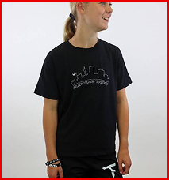
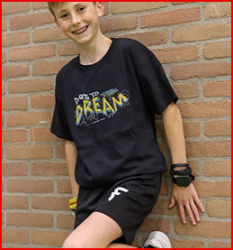
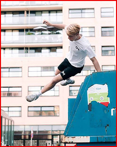

Kleding en schoenen zijn belangrijk voor freerunnen, je wilt natuurlijk niet van iets af glijden of je helemaal rot zweten na 1 keer springen, meeste dingen spreken wel voorzich, zoals waarom je bepaalde kleding aan zou dragen, maar toch is het moeilijk om de juiste te vinden. daarom deze pagina.
Over kleding en schoenen

Kleding
Een comfortabel zwart t-shirt
Kleding is belangrijk voor freerunnen, want je moet wel comfortable al je flips, sprongen en all je andere skills kunnen uitvoeren. Je moet natuurlijk ook zelf comfortable zijn dus niet erg zitten zweten of skinny jeans dragen die je benen niet laat strekken.
Schoenen

Kleding om in te bewegen
Schoenen zijn ook belangrijk. Je hebt ze nodig om makkelijker muren te kunnen klimmen, goed grip te hebben als je op iets staat en niet er af wilt gaan vallen. Het maakt het je veel makkelijker ook omdat je dan minder kracht uit je armen hoeft te halen en dus ook meer van je been kracht kunt verwachten.
De juiste maat

Ruimte nodig voor je trucjes
Hier vindt je alle kleren en schoenen die goed zijn voor freerunnen. Hou wel goed in de gaten dat je de juiste maat haalt, en dus niet te klein, want je hebt lekker ruimte nodig om je trucjes te kunnen doen.